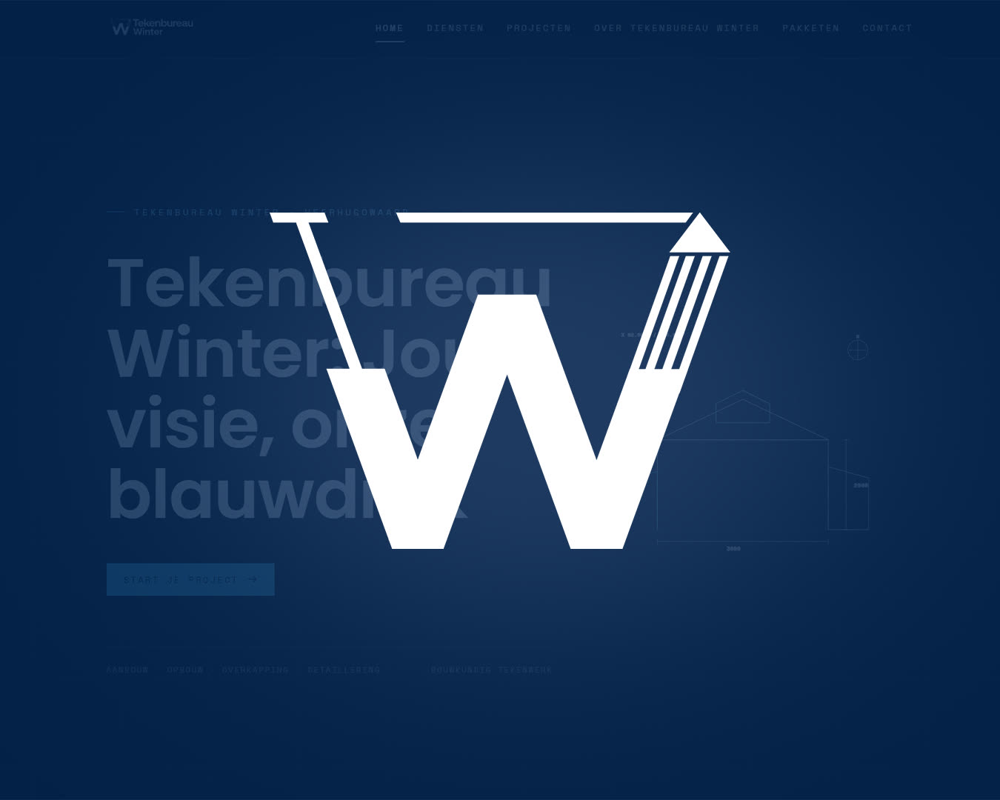

Website voor een
tekenbureau
Voor Tekenbureau Winter uit Heerhugowaard maakten we de website, de branding en de fotografie. In dit artikel lees je wat er op de site van een bouwkundig tekenbureau of architect hoort te staan en welke keuzes wij daarbij maakten.


Wie een aanbouw of dakopbouw wil, begint bijna altijd met zoeken op internet. Eerst naar ideeën, daarna naar iemand die het kan tekenen. Een tekenbureau dat op dat moment niet te vinden is, of een site heeft waar je niet uit wijs wordt, mist die klant. Voor Tekenbureau Winter bouwden we daarom een site die in een paar seconden duidelijk maakt wat het bureau tekent en voor wie.
Over Tekenbureau Winter
Tekenbureau Winter is een bouwkundig tekenbureau uit Heerhugowaard. Het bureau maakt tekenwerk voor aanbouwen en serres, dakopbouwen en overkappingen, en verzorgt de technische detaillering die een aannemer nodig heeft om te kunnen bouwen. De klanten zijn particulieren met verbouwplannen en aannemers uit de regio.
Wat we gebouwd hebben
We verzorgden het hele plaatje: de website, de branding eromheen en de fotografie. De site is opgebouwd rond de vragen die een bezoeker met verbouwplannen heeft.
- Wat tekenen jullie? Vier diensten, elk met een eigen blok: serre of aanbouw, opbouw, overkappingen en detaillering. In gewone taal, zoals klanten er zelf op zoeken.
- Wat hebben jullie eerder gemaakt? Een projectenpagina met uitgevoerd werk, zodat je ziet wat je kunt verwachten.
- Wat krijg ik voor mijn geld? Een pagina met pakketten, zodat je vooraf weet waar je aan toe bent.
- Hoe neem ik contact op? Een kort formulier, met adres, e-mail en telefoonnummer er direct naast.
Bovenaan staat de belofte van het bureau, "Jouw visie, onze blauwdruk", met daaronder meteen de vier soorten tekenwerk. Wie alleen de eerste schermhoogte ziet, weet al of hij goed zit.
Wat hoort er op de website van een tekenbureau?
Diensten zoals klanten ze noemen
Een vakman denkt in bestektekeningen en constructieve details. Een klant denkt in "ik wil een aanbouw" of "we willen een verdieping erop". Benoem je diensten op die tweede manier en leg daarna pas uit wat er technisch bij komt kijken. Dat helpt de bezoeker, en het zijn ook de woorden waarop mensen in Google zoeken.
Uitgevoerd werk met beeld
Tekenwerk is voor een leek lastig te beoordelen. Een foto van de aanbouw zoals hij er nu staat, naast de tekening waar het mee begon, zegt meer dan een alinea tekst. Zet er kort bij wat de vraag was en wat je hebt opgeleverd.
Duidelijkheid over het traject
Veel particulieren laten voor het eerst iets tekenen. Ze weten niet wat een vergunningaanvraag inhoudt of wanneer een constructeur nodig is. Een korte uitleg van de stappen en een pagina met pakketten of richtprijzen haalt een hoop twijfel weg en scheelt jou telefoontjes met steeds dezelfde vragen.
Een gezicht en een plaatsnaam
Een tekenbureau werkt lokaal. Mensen willen weten wie er bij hen aan tafel komt zitten en of je de regio kent. Zet dus je vestigingsplaats, je werkgebied en een foto van jezelf op de site. Voor Tekenbureau Winter fotografeerden we zelf, zodat er geen stockfoto's van onbekende mensen met een bouwhelm op staan.
Gevonden worden in je eigen regio
De meeste opdrachten voor een tekenbureau komen uit een straal van een paar kilometer. Zorg daarom dat je plaatsnaam in je titels en teksten staat, dat je een Google Bedrijfsprofiel hebt en dat tevreden klanten daar een review achterlaten. Hoe dat stap voor stap werkt, lees je in ons artikel over lokale SEO. Het klantverhaal van Tekenbureau Winter vanuit Heerhugowaard staat in dit artikel.
Wat de klant ervan vond
Tekenbureau Winter schreef na de oplevering: "Deze heren hebben voor mij een prachtige website opgezet en beheren deze heel goed. Alles was super duidelijk en de communicatie was echt top!!"
Ook een nieuwe website voor jouw bureau?
Brand-On is een webdesignstudio uit Purmerend, met onze ontwerper in Limmen. We werken voor tekenbureaus, architecten en andere vakmensen in heel Noord-Holland. Bekijk ons werk op de projectenpagina, of vraag een gratis demo aan. Dan bouwen we vrijblijvend een eerste versie van jouw nieuwe site.
Website voor een tekenbureau of architect
Maken jullie ook websites voor tekenbureaus en architecten?
Ja. Voor Tekenbureau Winter uit Heerhugowaard maakten we de website, de branding en de fotografie. Dezelfde aanpak werkt voor architecten, constructeurs en andere bureaus in de bouw.
Wat moet er op de website van een tekenbureau staan?
Je diensten in de woorden van je klant, zoals aanbouw, opbouw of overkapping. Daarnaast uitgevoerde projecten met foto's, uitleg over het traject en de kosten, je werkgebied en een eenvoudige manier om contact op te nemen.
Wat kost een website voor een tekenbureau?
Onze websites beginnen bij 750 euro voor het Starter pakket met vijf pagina's. Het Professioneel pakket van 1500 euro bevat tien pagina's, fotografie en lokale SEO. Je kunt eerst een gratis demo aanvragen, zodat je vooraf ziet wat je krijgt.
Verzorgen jullie ook de foto's van projecten?
Ja. Fotografie zit in het Professioneel pakket en is los bij te boeken. We fotograferen het bureau, de mensen en waar mogelijk opgeleverd werk.
Gerelateerde artikelen
Laten we jouw bureau
aanzetten.
Benieuwd hoe jouw site eruit kan zien? Vraag een gratis demo aan, helemaal vrijblijvend. Je krijgt binnen één werkdag een persoonlijk antwoord.